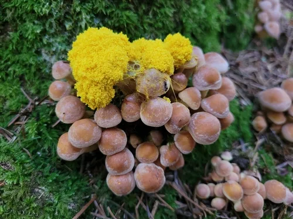

A yellow foamy patch on mulch around the plant
After wet weather a bright, cushion-like mass can appear almost overnight. Look underneath before assuming the roots are decaying.

What to check first
Look along the edge of the patch. A slime mold can bridge several loose chips, grass blades or pieces of decaying wood. It can even cover the outside of a healthy stem. Photograph its outline with some bare mulch visible so the growth surface is clear.
How to tell similar problems apart
A mushroom usually has a recognizable fruiting body. This growth can start as a soft-looking yellow mass, then become dull and crusty. Root rot instead affects living root or crown tissue. Wilting in the same bed deserves a separate moisture and drainage check.
What to do now
If the plant beneath is healthy, leave the patch to dry naturally. If it blocks light on small seedlings, gently lift the material away without disturbing their roots. A patch on bark chips alone gives no reason to dig up a shrub or treat its roots with fungicide.
What to check next
Compare the bed after the surface dries. Record whether the deposit shrank or changed color and whether new leaves remain healthy. If the crown itself becomes soft or shoots keep collapsing after the patch disappears, investigate the plant rather than the old deposit.